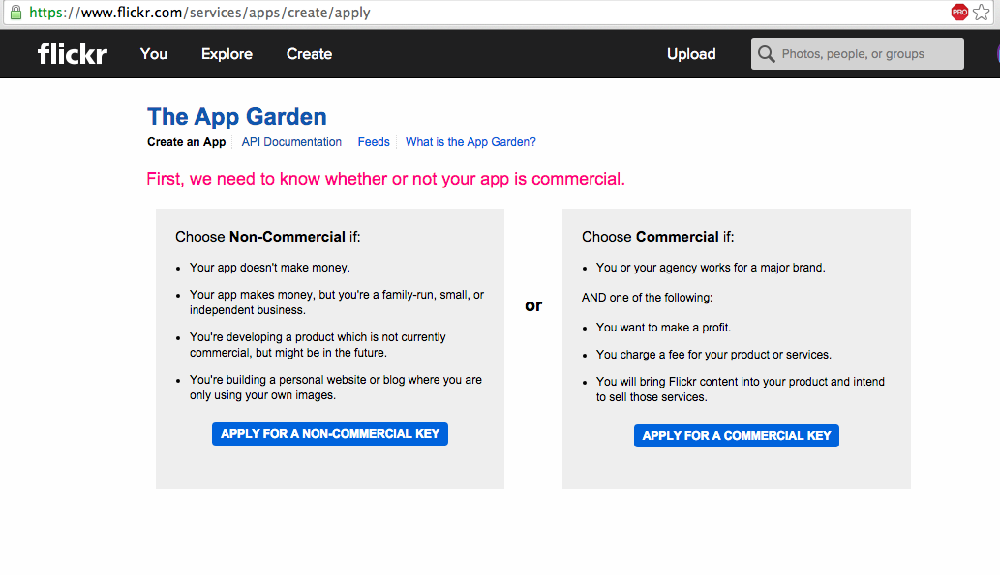
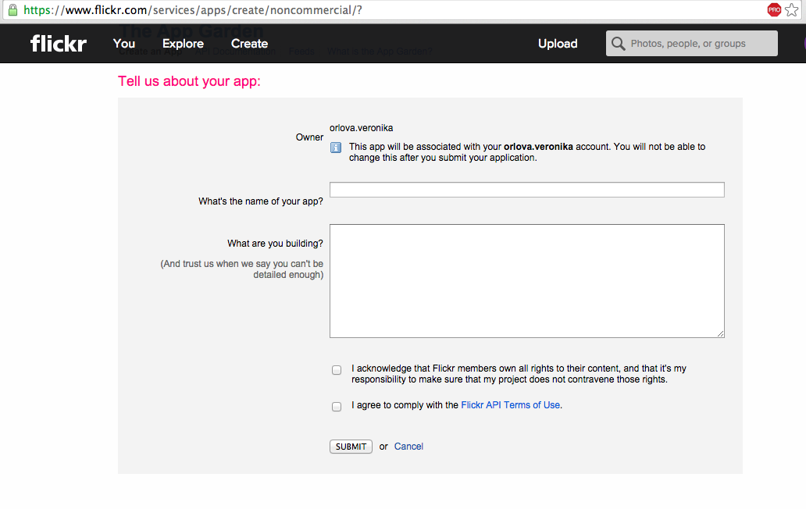
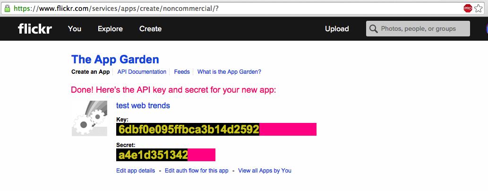

Flickr is a place where users are able to upload, access, organize, edit and share their photos. Flickr api allows users to access the database of photos and information related to them. Most of the Flickr website features are available through the api. Developers can search for images, upload photos, get information from media such as geo-locations, tags, user information. This website will provide you with four examples of how this API can be used. Main detailed documentation for the API can be found here.
Getting API key
In order to use the API in their website, developers need to obtain API key. To obtain the key the user should follow the following steps:
Step 1:
Login to flickr or sign up for a flickr account if you do not have one at www.flickr.com
Step 2:
Follow the link to apply for your key online where you choose the option of commercial or non-commercial use. Apply here
Step 3:
Fill in the details about the application you are creating
Step 4:
After submitting the form, you will get your API key
